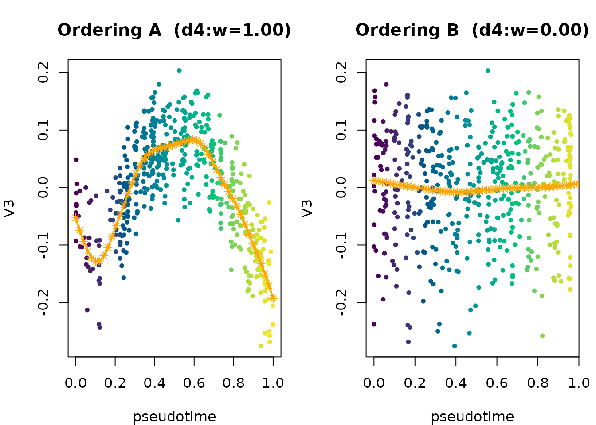
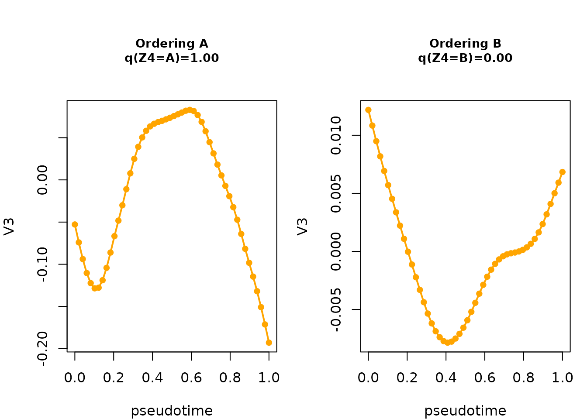
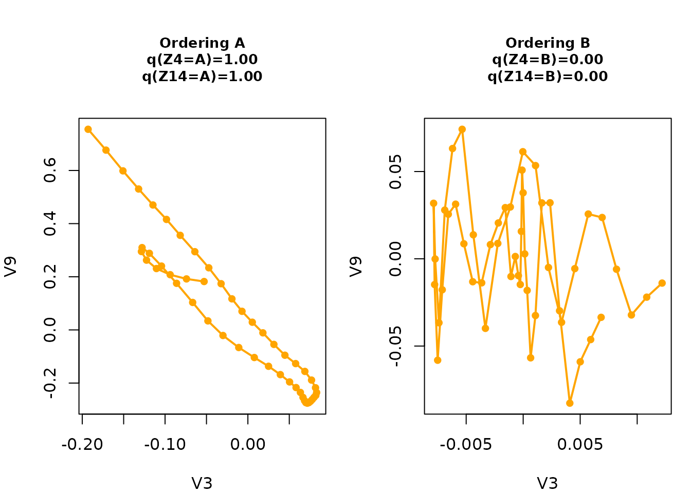

Intrinsic dimension
A single ordering describes one axis of variation: every feature follows a smooth trajectory along the same sample positions. Some datasets contain several such axes. For example, genes associated with cell differentiation and genes associated with the cell cycle can vary across the same cells in different ways. One ordering may describe one group well while missing the structure in the other.
MPCurver represents these patterns using M latent sample orderings. Each feature follows one ordering, and the model learns its assignment together with the sample positions and smooth trajectory. In this model, intrinsic dimension refers to the number of latent orderings in the returned model. With M=1, all features share one ordering; with M=2, two feature groups can follow different sample positions.
We first describe the model, then fit an example with M=2. Estimating intrinsic dimension covers choosing M; Multi-ordering CAVI describes the algorithm separately.
Statistical model
The standard model fits a fixed number M of latent orderings to a sample-by-feature matrix X\in\mathbb{R}^{n\times P}. Each ordering uses K grid positions. Sample i has a position C_i^{(m)} along every ordering m, while feature j follows one ordering, indicated by Z_j:
\Pr(C_i^{(m)}=k)=\pi_{mk},\qquad \Pr(Z_j=m)=\omega_m.
The position probabilities sum to one over k, and the feature-assignment prior weights sum to one over m. A feature’s assignment is shared across all samples.
Observations and smooth trajectories
Write U_j=(u_{j1},\ldots,u_{jK})^T for feature j’s trajectory. Conditional on its ordering and the sample’s position,
x_{ij}\mid Z_j=m,\ C_i^{(m)}=k,\ U_j \sim N(u_{jk},\sigma_j^2).
There is one noise variance \sigma_j^2 per feature, shared across orderings and grid positions. The trajectory has a random-walk smoothness prior:
p(U_j\mid Z_j=m,\lambda_{jm}) \propto \exp\!\left(-\frac{\lambda_{jm}}{2}U_j^TQ_KU_j\right).
The default second-order random walk (RW2) penalizes second differences along the grid. A larger precision \lambda_{jm} favors a smoother trajectory. The standard fit estimates the noise variances, smoothness precisions, position probabilities \pi, and feature-assignment prior weights \omega by empirical Bayes.
With the default ridge = 0, Q_K is an intrinsic precision matrix of rank
K-2. The likelihood identifies the
directions left unpenalized by the prior.
The fitting algorithm learns sample positions and soft feature-assignment probabilities jointly, retaining a trajectory distribution conditional on each possible assignment. The Multi-ordering CAVI page gives the variational family, objective contributions, and coordinate updates.
Choose a fitting approach
When the dimension is unknown, start with adaptive fitting using
fit_mpcurve(X, intrinsic_dim = "auto"). It is
computationally simpler: similarity initialization chooses a starting
dimension, then one adaptive model is fitted and orderings with
numerical-zero estimated prior weights are removed. It does not require
a sequence of full fits at different dimensions.
- Use
intrinsic_dim = Mwhen the analysis specifies the number of orderings. - Use
intrinsic_dim = "auto"with the default adaptive partition prior when you want the model to estimate the number of supported orderings. - Use
select_mpcurve_dimension()when you specifically want to compare dimensions under a fixed uniform partition prior. It fits multiple candidate models and compares their final objectives.
The adaptive and fixed-uniform procedures use different priors and selection rules, so they may return different dimensions. See Estimating intrinsic dimension for examples.
Fit a model with M = 2
We simulate 500 samples with two groups of ten features. The groups vary along different latent orderings, with quadratic and monotone trajectory families.
sim <- simulate_dual_trajectory(
n = 500,
d1 = 10,
d2 = 10,
d_noise = 0,
noise_sd = 0.05,
trajectory_family = c("quadratic", "monotone"),
seed = 1
)
X <- sim$X
truth <- sim$true_assignFit a model with M=2 and 50 grid positions using the default RW2 prior and PCA initialization.
fit_partition <- fit_mpcurve(
X,
intrinsic_dim = 2,
num_bins = 50
)Interpret feature assignments
fitted_assignments(fit_partition) is a
feature-by-ordering matrix: entry (j,m)
is the fitted probability q(Z_j=m) that
feature j follows ordering m. Each row sums to one. A row concentrated
on one ordering gives a clear assignment; a diffuse row indicates that
several orderings describe the feature similarly well.
head(fitted_assignments(fit_partition))
#> A B
#> V8 1 0.000000e+00
#> V11 0 1.000000e+00
#> V7 1 0.000000e+00
#> V3 1 3.373479e-217
#> V18 0 1.000000e+00
#> V13 0 1.000000e+00
table(fit_partition$partition$assign)
#>
#> A B
#> 10 10The labels in partition$assign select the most probable
ordering for each feature. For this simulation we can compare those
labels with the generating groups, allowing for an exchange of the two
ordering labels.
pred <- as.character(fit_partition$partition$assign)
truth <- as.character(truth)
accuracy <- max(mean(pred == truth), mean(pred != truth))
cat("Partition accuracy:", round(accuracy, 4), "\n")
#> Partition accuracy: 1Inspect sample orderings and trajectories
plot(fit_partition, dims = 4) displays the observed
values of feature 4 against the inferred sample positions for each
ordering, together with its fitted trajectory. The objective plot shows
progress over fitting iterations.
Figure 1 shows the variational objective over fitting iterations. Figure 2 shows observed feature values along each inferred ordering.
plot(fit_partition, plot_type = "elbo")Figure 1. Variational objective over fitting iterations.
plot(fit_partition, dims = 4, add_legend = FALSE,
pal = hcl.colors(100, "Viridis"))
Figure 2. Observed feature 4 values along each inferred ordering; colors encode pseudotime, and orange lines show fitted mean trajectories.
To focus on trajectory shape, use plot_type = "mu".
Panel m displays the conditional
posterior mean E[U_j\mid Z_j=m] against
normalized latent position. The assignment probability in the panel
title indicates how strongly the data support that ordering for the
selected feature.
Figure 3 shows conditional mean trajectory of feature 4 under each ordering; panel titles report assignment probabilities.
plot(fit_partition, plot_type = "mu", dims = 4)
Figure 3. Conditional mean trajectory of feature 4 under each ordering; panel titles report assignment probabilities.
Each curve answers: what trajectory is estimated if this feature follows this ordering? A low-probability panel describes an alternative assignment and should be interpreted with that probability in view.
With two selected features, each panel traces their conditional means against one another across the latent grid. This shows the joint path implied by placing both features on that ordering. Check both assignment probabilities when interpreting the path.
Figure 4 shows conditional mean paths for features 4 and 14 under each ordering.

Figure 4. Conditional mean paths for features 4 and 14 under each ordering.
Extract results
Table 1 lists the extraction functions used for further analysis. Their ordering dimension is retained for both single- and multiple-ordering fits.
Table 1. Result extraction for sample positions, conditional trajectories, and feature assignments. Here n is the number of samples, P features, K bins, and M fitted orderings.
| Quantity | Extraction | Shape |
|---|---|---|
| Posterior-mean sample positions | fitted_positions(fit_partition) |
n \times M |
| Position probabilities | fitted_positions(fit_partition, "probability") |
n \times K \times M |
| Feature-assignment probabilities | fitted_assignments(fit_partition) |
P \times M |
| Conditional trajectory means | fitted_trajectories(fit_partition) |
P \times K \times M |
| Conditional trajectory SDs | fitted_trajectories(fit_partition, "sd") |
P \times K \times M |
| Conditional trajectory covariances | fitted_trajectories(fit_partition, "covariance") |
K \times K \times P \times M |
positions <- fitted_positions(fit_partition)
assignment_probabilities <- fitted_assignments(fit_partition)
trajectories <- fitted_trajectories(fit_partition)Rows retain the input sample or feature names. Use feature names in
plots, for example
plot(fit_partition, dims = colnames(X)[1]) when
X has names. Model metadata such as
fit_partition$intrinsic_dim and
fit_partition$params$sigma2 remain available directly.
Sample positions are normalized to [0,1]. Ordering labels and directions are
arbitrary; use sample annotations to interpret the axes and align
orderings when comparing fits. See ?mpcurve for the
complete object description. Effective-dimension reporting is covered in
Estimating
intrinsic dimension.
Assess convergence and continue fitting
By default, fitting runs directly at temperature T=1, with no annealing. max_iter
limits the coordinate sweeps, and objective_history records
improvements in the same objective throughout fitting.
objective <- fit_partition$objective_history
cat("Recorded objective values:", length(objective), "\n")
#> Recorded objective values: 101
cat("Final objective increments:\n")
#> Final objective increments:
tail(diff(objective))
#> [1] 0.8236484 0.8507646 0.9722867 1.2223559 1.6022176 1.9395082If the increments remain appreciable at the iteration limit, run additional iterations:
fit_partition <- do_mpcurve(fit_partition, max_iter = 10)This refines the orderings, trajectories, assignments, and estimated parameters at T=1, extending the objective history.
Fitting settings
Initialization
For a specified M, the default
initialization uses feature similarity and single-linkage clustering to
form M feature groups, then initializes
one sample ordering per group. Each group uses the selected
initial_method; the default "PCA" uses that
group’s first principal component.
Similarity options are "spearman" (the default for
specified M), "pearson",
"spline_r2", and "smooth_fit". For example,
pass
init_control = mpcurve_init_control(similarity_metric = "spline_r2")
to change the metric. See mpcurve_init_control()
for metric definitions and alternative initialization settings.
Noise and smoothness
By default, the model estimates the noise variance \sigma_j^2 for each feature j, shared across orderings.
control$sigma2_init sets the initial values of \sigma_j^2 using a scalar or a
feature-specific vector. Alternatively, supply known measurement
standard deviations through S, as a feature-specific vector
or a matrix matching X. In that case
params$sigma2 is NULL, and the supplied
measurement errors determine the likelihood variances.
See the known-error updates for the corresponding algorithm.
For advanced fitting settings, see mpcurve_control().
To estimate the intrinsic dimension, continue to Estimating intrinsic dimension.